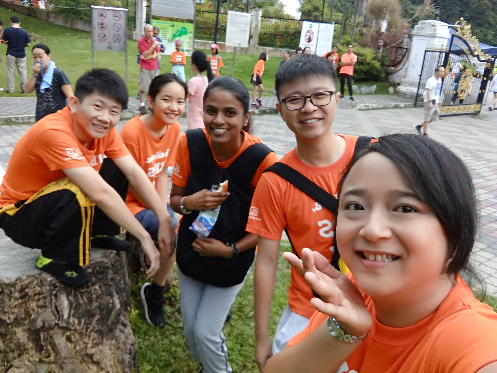
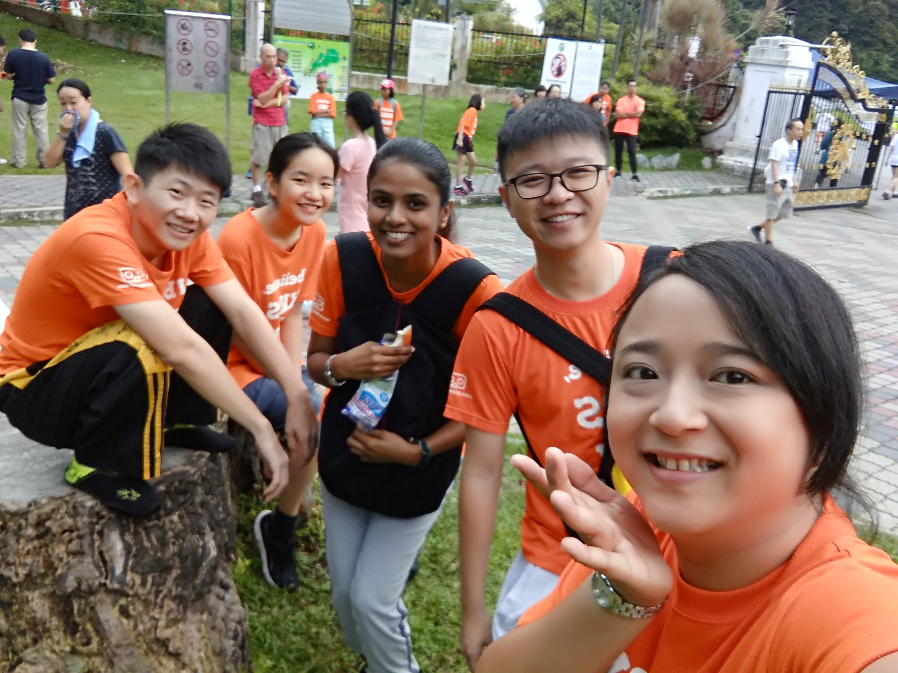

A MEANINGFUL HOLIDAY
Outing with my parents, Telebort teachers and classmates
On 19th Aug 2018, I went to Botanic Garden with my classmates from Telebort. Our instructors from Telebort gave us some missions and we will need to accomplish the missions. We need to take photos of our favourite sceneries, plant, and come out with some creative poses in the photos! I really enjoy the trip with my classmates. In this outing, I have seen and learned about different plants. I saw a lot of monkeys as well! They are very cute! I love Botanic Garden and I hope we will have another outing again in the future.
Botanical Garden

Botanic Garden at Penang is the only botanic garden in Malaysia. Penang is proud for being home to this green piece of land that makes a great spot for a jog or stroll with friends and family. The garden is most well-known for its greenery with a variety of flora and fauna. Some of the rare and special flora that can be found in the garden include the large roots of Sengkuang tree, the Cannon Ball tree, the Pinang palm, the black lily, and the candle tree.

 
